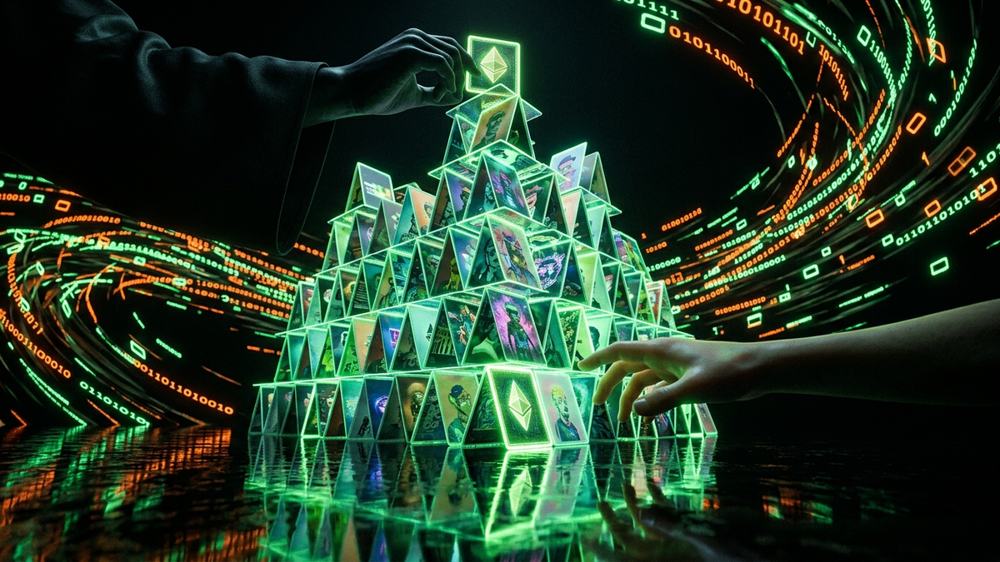

Alright, let's cut the crap. You've heard the stories: digital art selling for millions, kids becoming crypto-rich overnight off cartoon monkeys. The hype around NFTs promises a new world of digital ownership, a renaissance for artists. But as someone who has spent 15 years cleaning up digital messes and securing networks against every trick in the book, I'm here to tell you that the vast majority of what you're seeing is a digital carnival show, and the main attraction is a scam as old as Wall Street: wash trading.
This isn't some high-level, theoretical problem. This is a grimy, tactical deception designed to drain your wallet. The technology is new, but the human greed driving it is ancient. By 2026, with the rise of smarter automation and AI, this problem will be so rampant that 99% of the "hot" new digital art you see will be the product of sophisticated market manipulation. This guide is your field manual. I'm not going to give you vague warnings; I'm going to show you exactly how the scam works, how to spot it, and how to protect yourself. Forget the hype. It's time for a dose of reality.
Before we even touch an NFT, you need to understand the core con. Wash trading is simple: an individual or group creates artificial trading activity by simultaneously buying and selling the same asset. Imagine a shady art dealer at an auction. He brings two friends. He puts a worthless painting up for sale, his first friend bids $10,000, then his second friend bids $20,000. To the outside world, it looks like there's intense demand for this painting. The scammer is just moving money between his own pockets (minus a small fee to the auction house), but he's creating a public record of "value."
This trick is highly illegal in traditional financial markets like the stock market. Regulators like the SEC will bring the hammer down on anyone caught doing it because it's blatant market manipulation. It defrauds legitimate investors by creating a completely false picture of an asset's demand and price history. But in the quasi-anonymous and largely unregulated world of crypto and NFTs, it's the Wild West. There's no sheriff. Creating a new digital wallet is free and takes about 30 seconds. This is the "crypto facelift"—the scam is the same, but the tools make it exponentially easier and less risky for the criminals.
The entire purpose is to build a fake "provenance" or history for a digital item. Scammers target our most basic instincts: the fear of missing out (FOMO) and the desire for a quick profit. When you see an NFT that was bought for 0.1 ETH last week and is now trading for 50 ETH, your brain screams "I need to get in on this!" The wash trader is counting on you to react emotionally and not look at the details. They are manufacturing a story, and the blockchain, a tool meant for transparency, is ironically the canvas they use to paint their fake masterpiece. They're banking on the fact that most people don't know how to read that canvas.
Let's get our hands dirty and walk through how this scam is executed, step-by-step. It's shockingly simple once you see the moving parts. The scammer isn't a genius hacker; they're just exploiting the system's openness and your lack of diligence. Think of it like a three-card monte game on a street corner, but with digital wallets.
Here’s the playbook:
💡 Expert IT Tip: Use a blockchain explorer like Etherscan (for Ethereum) to become your own detective. Before buying an NFT, copy its contract address and token ID into the explorer. Look at the transaction history. If you see the *same* NFT being passed between a small circle of wallets (Wallet A -> Wallet B -> Wallet C -> A), that is a giant, flashing red light. Real markets are messy and involve hundreds of independent participants, not a clean, closed loop.
This is the great paradox of crypto scams. The very technology that enables the fraud is also the one that provides the permanent, unchangeable evidence to expose it. It’s a double-edged sword, and if you know how to wield it, you have a massive advantage over the 99% of people who don't.
First, let's look at why it's easier to commit the fraud. In the traditional world, opening multiple brokerage accounts to wash trade stocks would require fake IDs, social security numbers, and bank accounts. It's a logistical nightmare that leaves a huge paper trail for regulators. On the blockchain, you can create an infinite number of anonymous wallets in minutes for free. There are no names, no addresses, just strings of characters. This pseudonymity allows a single person to create the illusion of a bustling market with dozens of participants. Furthermore, crypto markets never close, and transactions are nearly instant, allowing scammers to execute their entire price-ladder scheme in under an hour, a speed unthinkable in the regulated art or stock world.
However, here's the beautiful part for us cybersecurity folks: the blockchain is a public ledger. Think of it as a global security camera that records every single thing that happens, and the footage can never be deleted or altered. This is where the scammer's advantage crumbles if you know where to look. Every transaction—every sale from Wallet A to B—is recorded forever. We can perform "on-chain analysis" to connect the dots. We can see exactly which wallet funded Wallet B and Wallet C. In 9 out of 10 lazy wash trades, you'll find that both dummy wallets received their initial ETH from the same source wallet that first held the NFT. It's the digital equivalent of a suspect's fingerprints being all over a crime scene. No legitimate market behaves this way. Real buyers don't get their money from the seller right before the sale.
Protect your identity and browse privately with Surfshark One - the all-in-one security suite.
GET 60% OFF SURFSHARK NOWThis transparency is your ultimate weapon. The scammer is hiding in plain sight, counting on your ignorance. They believe you'll only look at the pretty price chart on the NFT marketplace and not the raw, irrefutable data on the blockchain itself. By learning to read that data, you flip the script. The very tool they use for deception becomes your tool for verification.
If you think wash trading is bad now, you haven't seen anything yet. The schemes I've described so far are mostly manual or run by simple scripts. By 2026, we'll be dealing with AI-driven wash trading networks that will make today's scams look like child's play. This is where my cybersecurity background makes the alarm bells ring loud and clear. We are on the cusp of an arms race between AI-powered fraud and AI-powered detection, and most individual investors are going to be caught in the crossfire.
Here's what the future of this scam looks like. Instead of just two or three dummy wallets, an AI will manage thousands of them. It will algorithmically distribute funds from multiple exchanges through privacy mixers to obscure the origin. The AI won't just trade one NFT in a simple ladder. It will simulate a complex, organic market, having its wallets buy and sell other, unrelated NFTs to build up a "believable" history before they start wash trading the target asset. The price increases won't be a perfect, suspicious staircase; they'll be randomized, with small dips and periods of inactivity to mimic real market behavior. It will be nearly impossible for a human to manually spot these patterns.
But the real danger is when the on-chain manipulation is combined with off-chain social engineering, also powered by AI. These bot networks will manage thousands of fake social media profiles on Twitter, Discord, and Telegram. They will generate convincing conversations about the NFT collection, create fake artist profiles with AI-generated art and backstories, and simulate a thriving community. When you go to "do your own research," you'll find what looks like a genuine, hyped project. The AI will create a perfect illusion, a pincer movement of fake on-chain data and fake off-chain social proof, all designed to lure you in. This is how we get to a world where 99% of new "hot" art is a trap.
💡 Expert IT Tip: Protect your wallet proactively with a transaction simulator browser extension like Wallet Guard or Pocket Universe. Before you click "confirm" on a purchase, these tools run a simulation of the transaction and show you exactly what will happen—what you're giving, what you're getting, and any red flags with the smart contract or destination wallet. It's like having a bomb squad check a suspicious package *before* you open it. In an AI-driven scam world, this kind of proactive, real-time security will be non-negotiable.
Knowledge is useless without action. You understand the theory, now let's make it practical. This is your pre-flight checklist before you even think about spending a dollar on an NFT that seems too good to be true. Run every potential purchase through this filter. If you find even one or two of these red flags, walk away. There will always be another opportunity; your capital is what's irreplaceable.
Here's what to hunt for on a block explorer and the marketplace page:
Treat every purchase like a forensic investigation. It takes a few minutes of work, but it can save you thousands of dollars and a world of regret. Don't trust the hype; trust the data.
The world of NFTs isn't inherently a scam, but it's a territory filled with traps for the uninformed. The promise of decentralized ownership and a new creator economy is real, but it's buried under layers of pure, unadulterated greed. Wash trading isn't a clever hack; it's a cheap psychological trick wrapped in new technology, designed to exploit your emotions and empty your pockets.
The key takeaway is this: the blockchain's transparency is your greatest shield. The evidence of the fraud is sitting there in plain sight, permanently recorded on a public ledger. The scammers are betting that you won't look. They are betting you'll get swept up in the hype, the flashy art, and the dollar signs. Your job is to prove them wrong.
Stop listening to influencers. Stop making decisions based on FOMO. Start treating the blockchain not as a casino, but as a database to be interrogated. Learn to use the tools, follow the money, and question everything. In this space, the old Russian proverb "Trust, but verify" is bad advice. The correct mantra for Web3 is: "Don't trust. *Always* verify on-chain." That is the only mindset that will keep you safe.
Don't wait for the headlines. Our Private Telegram Channel delivers real-time AI security updates and digital wealth strategies before they go viral. Stay protected. Stay ahead.
⚡ JOIN THE 1% NOWNo sign-up required. Instantly check risks, analyze AI text, or calculate your digital finances.